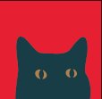

Typography
The font system.
Four typefaces, each doing a specific job — from headlines and signage down to menu copy and utility text.
Web rendering note: Gill Sans and Gibson Script are licensed desktop fonts. This document uses web approximations — Barlow in place of Gill Sans, and Dancing Script in place of Gibson Script. Web font implementation will be reviewed at digital production stage.
Signage / headlines
Gill Sans Bold
Web proxy: Barlow 700
The workhorse. Utilitarian with real weight — the kind of type you'd see stenciled above a bar or hand-painted on a roadside sign. Pulls off the tongue-in-cheek hotel signage register without trying too hard.
Script accent
Gibson Script
Web proxy: Dancing Script 700
The handshake. A simple hand-drawn script for accent words — the kind that shows up next to the bold in vintage type pairings. Friendly without being precious. A word, a phrase, never a paragraph.
Body copy
Gill Sans Semibold & Regular
Web proxy: Barlow 600 / 400
Matches the sans in the signage DNA. Readable at menu scale, legible in low light. Semibold for labels and callouts; Regular for descriptions and longer reads.
Emphasis / accent
GIN
No web proxy — logo and print use only
The same face used for "Stranger" in the logo lockup. Used sparingly — a word that needs visual punch, a label that earns a second look. Not for running text. Not for signage. Just the moments that need it.
01 — System: taglines and applications

02 — Extended: in-context detail


Social profiles.
Approved profile images for social platforms. Use these — don't crop the full wordmark yourself. The solo cat is the avatar; the wordmark square is for platforms that support rectangular or larger profile formats.
